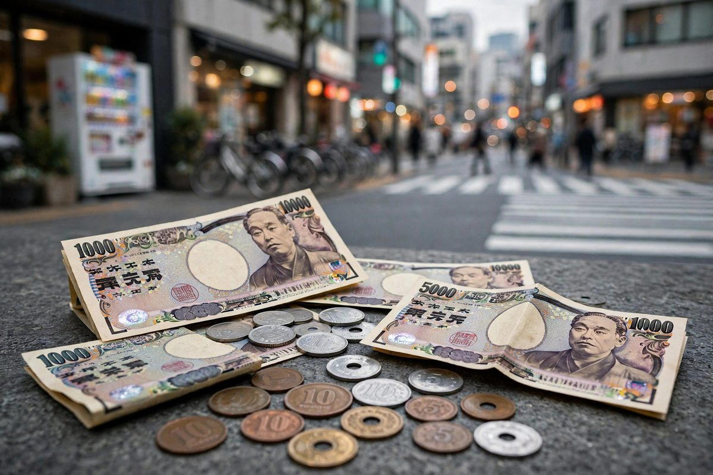

Japanese Yen Guide: USD to JPY and Travelling in Japan

The yen in brief
The Japanese yen is one of the most traded currencies in the world and a classic safe-haven currency: when global markets fall, investors often buy yen, pushing its value up, and when markets are calm, the yen tends to weaken as investors sell it to buy higher-yielding currencies. The Bank of Japan has kept interest rates near zero for many years, which has made the yen structurally weaker against the dollar, with the USD to JPY rate moving from around 110 to above 150 in recent years.
For travellers, a weak yen is good news: Japan becomes cheaper in dollar terms, and hotels, food, and transport cost less than they did a few years ago. For anyone sending money to Japan, the same move means more yen per dollar, though the rate can reverse quickly when the Bank of Japan changes policy, so check the live rate before any large conversion.
Paying in Japan
Japan was once a cash-only country, but card acceptance has improved dramatically, and most hotels, restaurants, department stores, and convenience stores now accept cards. A fee-free card is the best way to pay, since it converts at close to the mid-market rate. Smaller restaurants, rural shops, and temple entry fees may still be cash-only, so carry some yen, especially outside the big cities.
Withdraw yen from ATMs at convenience stores or post offices, which accept foreign cards and are found everywhere, rather than from exchange bureaus. Avoid exchanging cash at the airport, where rates are poor, and avoid carrying large amounts of cash, though Japan is one of the safest countries in the world for doing so. A multi-currency account that holds yen is useful for repeat visitors, letting you convert when the rate is favourable.
Yen quirks to know
Yen amounts look large because there are roughly 150 yen to the dollar, and prices are quoted without decimals. A meal costing 1,500 yen is about ten dollars, and it helps to learn the rough conversion, such as 100 yen being about 65 to 70 US cents, so you can judge prices quickly. Coins come in denominations up to 500 yen, and the 500 yen coin is worth over three dollars, so do not treat coins as small change.
Japan has no tipping culture, so do not add a tip to restaurant bills, and cash is still preferred for small purchases in markets. If you receive yen as change, check the coins carefully, since the 500 yen coin is sometimes counterfeited. With a fee-free card, some cash, and the live rate on our converter, Japan is straightforward and affordable to navigate.
Putting It Into Practice
Before a trip to Japan, learn the rough conversion in your head, such as 100 yen being about 65 to 70 US cents, so you can judge prices without a calculator. Load a fee-free card and a multi-currency account if you have one, and plan to withdraw yen from convenience store ATMs, which are everywhere and accept foreign cards. Carry enough cash for small restaurants and rural shops, and enjoy the fact that a weak yen makes Japan more affordable than it has been for years.
Frequently Asked Questions
How many yen do I get for 100 dollars?
At 150 yen per dollar, about 15,000 yen at the mid-market rate, less after any spread or fee.
Is Japan cashless now?
Mostly in cities, but cash is still needed for small restaurants, rural shops and temple fees. Carry some yen.
Why is the yen so weak?
Very low Japanese interest rates make the yen less attractive to hold, so investors sell it for higher-yielding currencies.